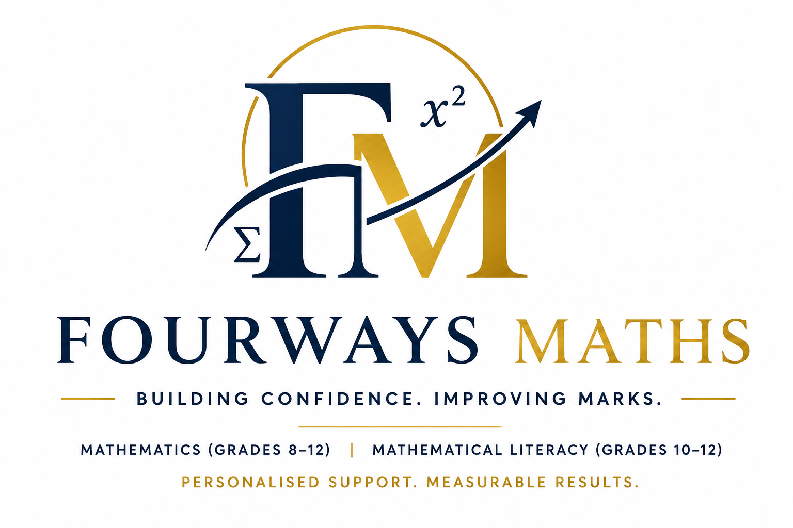

Specialised Mathematics (Grades 8–12) and Mathematical Literacy (Grades 10–12) support tailored to each learner's needs.
Qualified Educator • Online Academic Support
Fourways Maths provides personalised tutoring designed to help learners understand concepts, improve confidence, and achieve stronger academic results:
📈 Improve Results
🎯 Personalised Support
💻 Convenient, flexible Lessons
Hi, I'm Gcina Sithole, founder of Fourways Maths.
Fourways Maths was established to provide learners with personalised academic support that builds confidence, strengthens understanding and improves results. As the business grows, our commitment remains the same: connecting learners with quality educational support tailored to their individual needs.
I currently specialise in Mathematics (Grades 8–12) and Mathematical Literacy (Grades 10–12), helping learners overcome challenges through patient guidance, structured lessons and clear explanations.
Whether a learner is aiming to improve their marks, prepare for exams, or build confidence in the subject, our goal is to make Mathematics more accessible and less intimidating.
Grade 8–12 Mathematics support.
Grade 10–12 Mathematical Literacy support.
Focused revision and exam readiness.
Before we prepare your personalised quote, we'll need a few details.
Start My Quote ```Ready to improve your results?
Contact on WhatsApp